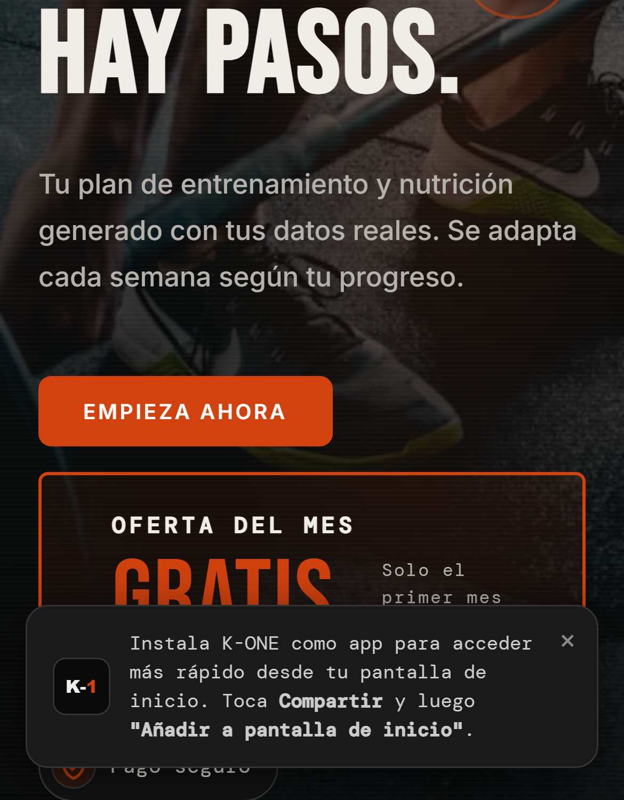
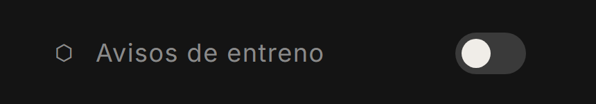
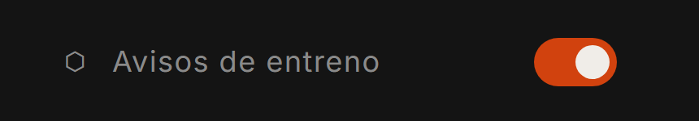

Sin descargar nada de ninguna tienda.
La misma web, en tu pantalla de inicio.

Solo los días que no hayas entrenado.


Un interruptor en tu menú. Nada más.
Tu plan generado con tus datos reales.
Se adapta cada semana según tu progreso.